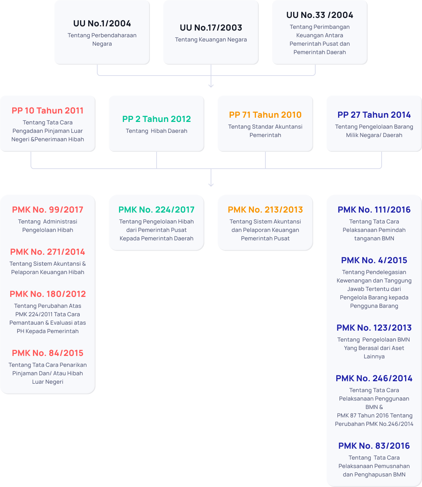

Indonesia
Indonesia
 English
English
SK Menteri PPN / Kepala BAPPENAS No. 72/M.PPN/HK/07/2020

Milestone Project Indonesia Disaster Management Fund

Sejarah
Indonesia Disaster Management Fund
Pada Desember 2004, wilayah Aceh dan pesisir pantai barat Pulau Sumatera dilanda bencana tsunami, yang menelan korban hingga 200.000 jiwa. Beberapa bulan berselang, Pulau Nias dilanda gempa bumi. Dan, sekitar setahun kemudian, giliran Pulau Jawa yang mengalami gempa serta tsunami, yang menelan korban hingga 6.000 jiwa. Pada 2010, Gunung Merapi meletus, menghancurkan rumah-rumah dan lingkungan yang belum benar-benar pulih dari bencana sebelumnya.
Kepulauan Nusantara memiliki kondisi dan karakteristik geografi yang menjadikannya rentan bencana alam; seperti gempa bumi, letusan gunung berapi, tsunami, longsor, banjir dan sebagainya. Menurut data data Badan Nasional Penanggulangan Bencana (BNPB), antara 2005-2015, terjadi rata-rata 1.545 bencana alam—besar maupun kecil—setiap tahunnya di seluruh wilayah Indonesia. Bencana-bencana tersebut telah memakan korban jiwa, menghancurkan kehidupan masyarakat, serta merusak hasil-hasil pembangunan.
Pemerintah Indonesia—di tingkat nasional maupun lokal—harus memiliki kesiapan dalam menghadapi bencana; baik kesiapan dana, personil, sistem informasi hingga sistem pengetahuan tentang penanganan paska bencana terbaik yang berasal dari pengalaman-pengalaman sebelumnya. Pemerintah Indonesia membuka diri terhadap berbagai bentuk partisipasi dan kerjasama sama dalam penanganan bencana yang terjadi saat ini maupun di masa mendatang.
Peristiwa tsunami di Aceh dan Nias juga membawa dampak-dampak positif tersendiri. Pemerintah Indonesia berhasil membangun pendekatan yang baik dan menjadi acuan internasional dalam mengatasi dampak bencana. Misalnya, Pemerintah membentuk Multi Donor Fund for Aceh and Nias (MDF) untuk mengoordinasi dukungan negara dan lembaga internasional bagi proses rekonstruksi dan rehabilitasi di Aceh dan Nias, yang berhasil mengelola dana bantuan hingga $655 juta, dengan dukungan World Bank sebagai wali amanah.
Tahun 2006, berpegang pada pengalaman MDF, Pemerintah membentuk Java Reconstruction Fund (JRF) untuk proses rekonstruksi bencana di Pulau Jawa. Dan, guna mengantisipasi kemungkinan bencana lainnya ke depan, pada tahun 2009 dibentuk Indonesia Multi Donor Fund Facility for Disaster Recovery (IMDFF-DR).
IMDFF-DR adalah mekanisme pendanaan yang bertujuan memobilisasi dana dan mengkoordinasikan bantuan internasional dalam rangka mendukung dan melengkapi upaya Pemerintah dalam penyelenggaraan penanggulangan bencana. IMDFF-DR berperan mengatasi kekurangan anggaran Pemerintah. Selain itu, lembaga ini berperan sebagai katalisator guna meningkatkan kualitas penanggulangan bencana secara berkesinambungan, dengan memanfaatkan jejaring dan keahlian, serta pengalaman mitra internasional.
Dasar Hukum Pengelolaan Hibah
Terimakasih atas pesan kritik dan saran membangun Anda untuk kami!